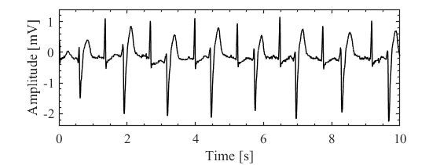
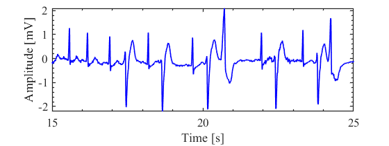
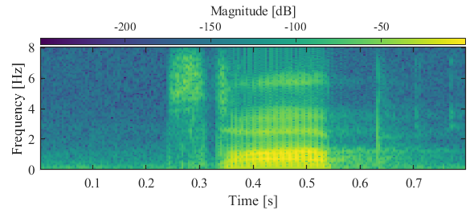
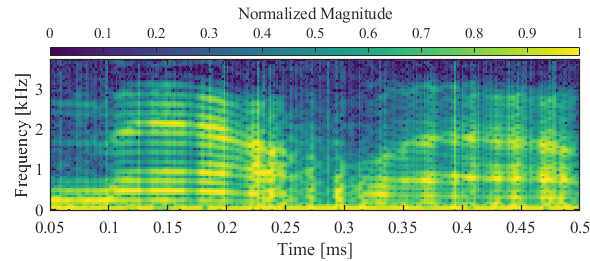
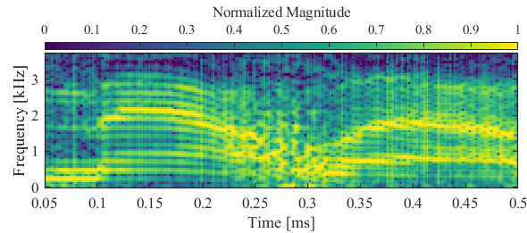
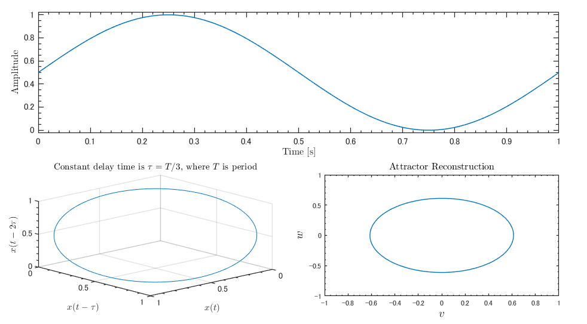

MATLAB® TM-Lab Package Documentation
このテキストはTM-Lab用のMATLABパッケージのドキュメントです。 並びはかなりテキトーなので，ctrl+Fとかでなんとか探してください。
Contents
zeros_like(x)
入力配列と同じサイズのゼロ配列を返す関数です。 PythonのNumpyに実装されているnumpy.zeros_like()と同じです。
Argument
- x (array; double): 入力配列。
Return
- y (array; double): xと同じサイズをもつゼロ配列。
x = [1 2 3;
4 5 6];
y = zeros_like(x);
size(x)
size(y)
ans =
2 3
ans =
2 3
上の例では，2行3列の行列xを作成した後，それと同じサイズのゼロ行列yを作成する例です。
plt(x, y, x_label, y_label, linecolor, linewidth)
院ゼミや論文用に小綺麗な図を用意するための関数です。 1次元データのプロットを簡単に行えます。
Argument
- x (array; double): 時間軸配列。
- y (array; double): プロットする配列。xと同サイズの必要がある。
- x_label (str, char): x軸ラベル。
- y_label (str, char): y軸ラベル。
- linecolor (str, chr): プロットの色を指定。デフォルトは黒。
- linewidth (double): プロット線の太さを指定。デフォルトは1.0。
Return
- f (figure): figureハンドル。
load mit200 % MATLABにデフォルトで入っている心電図サンプルデータ [~] = plt(tm, ecgsig); % 心電図データをプロット xlim([0 10]) ylim([-2.4 1.4]) [~] = plt(tm, ecgsig, "Time [s]", "Amplitude [mV]", "b", 1.25); % 線を青く太くする xlim([15 25]) 
上の例のように，plt関数の使用後にxlimやylimを設定することで微調整も可能です。 figファイルも一緒に保存することをお勧めします。
p_color(X, Y, Z, x_label, y_label, c_label, cmap, norm, method)
院ゼミや論文用に小綺麗な図を用意するための関数です。 2次元配列のカラープロットを簡単に行えます。 スペクトログラムなどの描画に最適です。
Argument
- X (array; double): 横軸の配列。
- Y (array; double): 縦軸の配列。
- Z (array; double): プロットする2次元配列。
- x_label (str, char): x軸のラベル。
- y_label (str, char): y軸のラベル。
- c_label (str, char): カラーバーに表示するラベル。
- cmap (str, char): 適用するカラーマップの名前。デフォルトはviridis（PythonのMatplotlibと同じ）。
- alpha (double): カラーマップの透明度。デフォルトは1。透明度ゼロが1なので注意。
- norm (numeric, logical): trueを指定した場合，配列Zをmethodの方法によって正規化します。
- method (str, char): 正規化方法。デフォルトはrange。rangeは0～1の範囲に正規化する。zscoreやcenter, scaleなどが使用可能。
Returns
- f (figure): figureハンドル。
[audio, fs] = audioread('stop_command.flac'); % 音声信号をロード % 音声信号を短時間フーリエ変換 [mag, ~, time] = stft(audio, fs, 'Window', hamming(128), 'OverlapLength', 64, 'FFTLength', 2^10, ... 'FrequencyRange', 'onesided'); mag = 20 * log10(abs(mag).^2); % dBに変換 % プロットする [~] = p_color(time, linspace(0, fs/2, numel(mag(:, 1)))./1e3, mag, "Time [s]", "Frequency [Hz]", "Magnitude [dB]", "viridis");
ちなみに，[~]という記法は，「戻り値（この場合はfigureオブジェクト）は要らないよ」という意味です。 もう使わない変数が戻り値となる場合は，このように省略することで処理の高速化とメモリの削減につながります。
get_filename(extension, path, absolute)
指定した拡張子をもつファイル名のリストを取得する関数です。 csv形式の測定データなどをまとめて処理したい場合に便利です。
Argument
- extension (str, char): 取得したいファイル名の拡張子。ピリオドはつけないこと。
- path (str, char): 検索するフォルダのパス。絶対パスが望ましい。デフォルトはカレントディレクトリ。
- absolute (numeric, logical): 1またはtrueを指定するとリストを絶対パス形式で返します。デフォルトはtrue。
Return
- files (strings): ファイル名のパスのリスト。
pemphasis(x, p)
プリエンファシスフィルタによって信号の高周波数成分を強調します。 おもに音声分野において用いられることが多く，MFCC産算出時の前処理として有名です。 （弊研究室のHI班はこの処理をしていないようですが…）
ちなみに，このフィルタはフィルタ係数が[1, -p]のFIRフィルタと等価であり，ほとんど 数値微分（前後2値差分）をとったような形になります。 したがって，変化が急峻な部分，すなわち周波数成分の大きなところは強調されるわけです。
Argument
- x (array; double): 1次元信号の配列。
- p (double): プリエンファシス係数。デフォルトは0.97。音声認識分野ではこの値が用いられる。
Returns
- y (array; double): 処理後の信号。
load mtlb % デフォルトで入っている音声データをロード % 音声信号を短時間フーリエ変換 [mag, ~, time] = stft(mtlb, Fs, 'Window', hamming(100), 'OverlapLength', 90, 'FFTLength', 128, ... 'FrequencyRange', 'onesided'); mag = 20 * log10(abs(mag).^2); % dBに変換 % プロットする [~] = p_color(time, linspace(0, Fs/2, numel(mag(:, 1)))./1e3, mag, "Time [ms]", "Frequency [kHz]", ... "Normalized Magnitude", "viridis", 1, true, "range"); xlim([0.05 0.5]) % プリエンファシスフィルタを適用した音声信号を短時間フーリエ変換 [mag_2, ~, ~] = stft(pemphasis(mtlb), Fs, 'Window', hamming(100), 'OverlapLength', 90, 'FFTLength', 128, ... 'FrequencyRange', 'onesided'); mag_2 = 20 * log10(abs(mag_2).^2); % dBに変換 % プロットする [~] = p_color(time, linspace(0, Fs/2, numel(mag(:, 1)))./1e3, mag_2, "Time [ms]", "Frequency [kHz]", ... "Normalized Magnitude", "viridis", 1, true, "range"); xlim([0.05 0.5]) 
プリエンファシスフィルタを適用した場合（下図）に広域が強調されていることが確認できます。
attractor(x, period, fs, display, newfig, Xauto, Yauto)
時系列信号を遅延座標系へ飛ばしてアトラクタを計算し，その後2次元平面へ再構成します。
Argument
- x (array; double): 時系列信号。
- period (double): 信号の周期。非周期信号の場合は平均的なものでよい。
- fs (int): 信号のサンプリング周波数。
- display (numeric, logical): trueを指定した場合，時間波形，アトラクタ，再構成アトラクタを図示します。
- newfig (numeric, logical): trueを指定した場合，新たにfigureを生成します。連続的にプロットを更新したい場合はfalseを指定してください。
- Xauto (numeric, logical): trueを指定した場合，プロットのx軸の範囲が動的に変化します。
- Yauto (numeric, logical): trueを指定した場合，プロットのy軸の範囲が動的に変化します。
Returns
- xout (array; double): アトラクタのx方向の配列。遅延はない。
- yout (array; double): アトラクタのy方向の配列。
- zout (array; double): アトラクタのz方向の配列。
- v (array; double): 再構成アトラクタの平面。
- w (array; double): 再構成アトラクタの平面。
Fs = 1000; % 1 kHzでサンプリング Period = 1; % 周期は1秒 time = 0 : 1/Fs : 5*Period + 2/3*Period - 1/Fs; Sinusoids = sin(2*pi*time/Period); % 正弦波を作成 [~, ~, ~, ~, ~] = attractor(Sinusoids, Period, Fs, true);
上の例では，単純な正弦波の再構成アトラクタを求めています。 楕円になりましたね。 ちなみに，ノコギリ波の場合は二等辺三角形に，矩形波の場合は六角形になります。 いろいろ試してみてください。 生体信号を入力すると，特徴抽出としても利用でき，異常検出等への応用も期待できます。